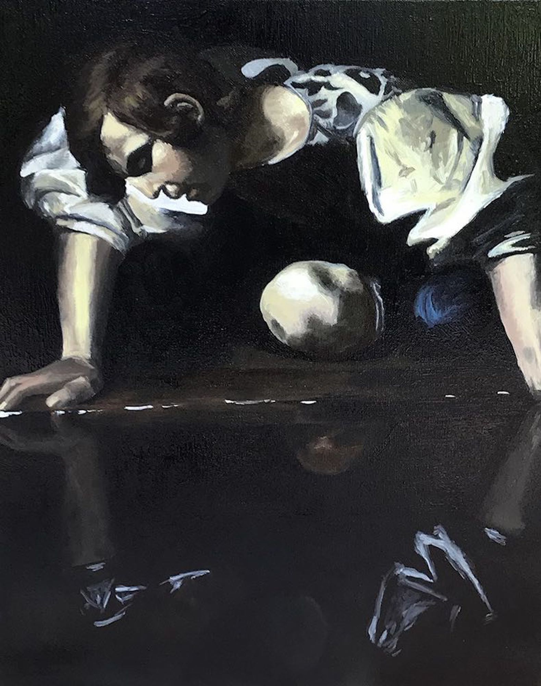
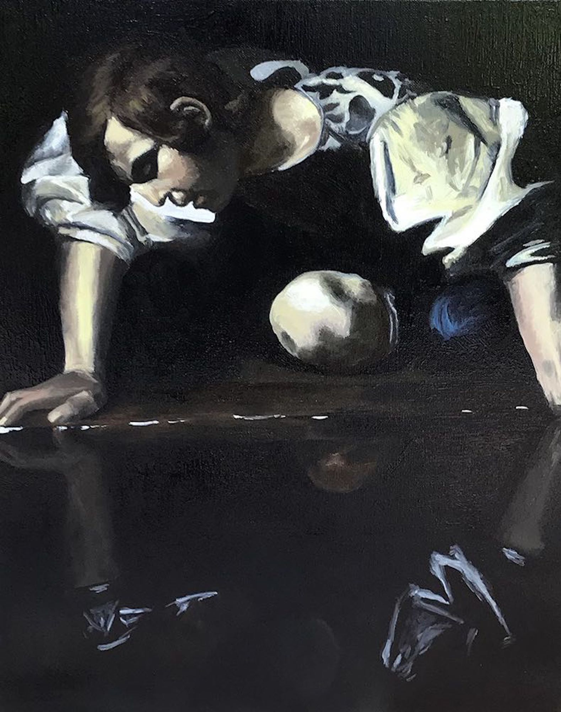

Paintings
ReproductionJohn Singer Sargent"A Bedouin Arab", 1891 My daughter, Penelope
My daughter, Penelope My grandmother, Marie Thérèse
My grandmother, Marie Thérèse ReproductionJohn Singer Sargent"Head of an Arab", 1891
ReproductionJohn Singer Sargent"Head of an Arab", 1891 Lilies
Lilies Trixie
Trixie Old manPicture by Kevin Kellyin Asia GraceCattedrale di Santa Maria del Fiore (Florence)
Old manPicture by Kevin Kellyin Asia GraceCattedrale di Santa Maria del Fiore (Florence) ReproductionJohn Singer Sargent"Fishing for Oysters at Cancale", 1878
ReproductionJohn Singer Sargent"Fishing for Oysters at Cancale", 1878 ReproductionJohn Singer Sargent"The Fountain", 1907
ReproductionJohn Singer Sargent"The Fountain", 1907 ReproductionJohn Singer Sargent"Carnation, Lily, Lily, Rose", 1885
ReproductionJohn Singer Sargent"Carnation, Lily, Lily, Rose", 1885 ReproductionRembrandt van Rijn"Self-Portrait", 1659ReproductionCaravaggio"Narcissus", 1599ReproductionJohn Singer Sargent"An Out-of-Doors Study", 1889
ReproductionRembrandt van Rijn"Self-Portrait", 1659ReproductionCaravaggio"Narcissus", 1599ReproductionJohn Singer Sargent"An Out-of-Doors Study", 1889 {kind=link}
{kind=link}
{kind=link}
{kind=link}